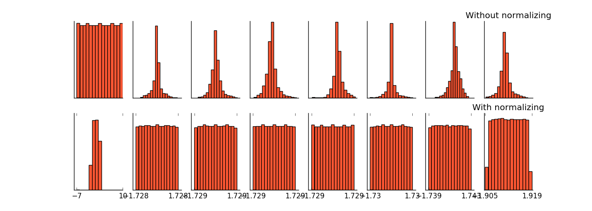

上一篇博客介绍了 GoogLeNet， GoogLeNet 有一个另外的名字，叫做 Inception-v1，那么既然有 v1，肯定就会有一个系列紧随其后，这篇博客首先介绍一下 Inception 系列的进化过程，和另外一个牛逼哄哄的网络 ResNet。
Inception-V2
不得不说，谷歌的团队就是厉害，在 GoogLeNet 发明后，不停的对它进行改良，发表了一个又一个更加厉害的网络。
Inception-V2 是 GoogLeNet 的改良版，与第一个版本相比，它的主要变化总结起来有两个：
- 1. 加入了 BN （Batch Normalization）层，增加了这一层的好处有：
- 1. 1 减少了 Internal Covariate Shift（内部 neuron 的数据分布发生变化），使每一层的输出都规范化到一个 N ( 0 , 1 ) 的高斯。下图展示了加入了 Batch Normalization 和没有加入 BN 层的产生的权值分布的变化图。
- 1. 2 增加了模型的鲁棒性，可以以更大的学习速率训练，收敛更快，初始化操作更加随意。
- 1. 3 作为一种正则化技术，可以减少 dropout 层的使用。
 - 2. 用 2 个连续的 3 x 3 conv 替代 inception 模块中的 5 x 5，从而实现网络深度的增加，网络整体深度增加了 9 层，缺点就是增加了 25% 的 weights 和 30% 的计算消耗。
Inception-V2 的架构图如下
Inception-V3
Inception-V3 网络，主要在 V2 的基础上，提出了卷积分解（Factorization）的概念，为什么要提出这个概念呢？主要是为了在保持特征提取性能的同事，减少计算量。
那么卷积分解（Factorization），具体是怎么做的呢？看下面两个例子。
1. 对于 “ 大 ” 的卷积核，例如下图的 5 x 5 的卷积核，将其转换成两个 3 x 3 的卷积核，这样，需要计算的参数量就是之前的 18 / 25。
2. 对于 “ 小 ” 的卷积核，例如下图的 3 x 3 的卷积核，将其转换成 1 x 3 和 3 x 1 的卷积核，这样，需要计算的参数量就是之前的 2 / 3。这里需要注意的是，为什么不用两个 2 x 2 的卷积核来分解呢？原因是两个 2 x 2 的卷积核只能减少 1 / 9 的计算量。
作者提出，在实际运用中，太早的时候用 1 x 3 和 3 x 1 的卷积核效果不好，所以在网络的前期，往往采用 1 x 7 和 7 x 1 的尺度。
好，回归正题，在 Inception-V3 中，卷积分解（Factorization）具体是怎么做的呢？其实在 V3 模型中，他们一共用到了 “ 三种 ” 不同的 Inception 的结构。对应在架构中的位置分别如下。
=> 第一个 Inception 和 V2 中的一样，只是将 V1 版本中的 5 x 5 卷积替换成了两个 3 x 3
=> 第二个 Inception 进行了横向和纵向的因式分解，将 n x n 分解成了 n x 1 和 1 x n。
=> 第三个 Inception 将 3 x 3 的卷积核进行了再次拆解。
为了进一步的减少计算量，在 Inception 层与层之间的结构，也进行了网格大小的优化。卷积网络通过池化层来减少特征图的 Grid Size，而交换卷积层和池化层的位置，可以减少计算量。例如：
Inception V3 中对比了两种模型，他们的区别是，到底是先做 Inception 再做 Pooling 呢？还是先做 Pooling 再做 Inception 呢？
左边的做法，不满足 representional bottleneck 原则，即是，在网络的前期，不宜下降的太快。右边虽然满足了这个原则，但是计算量却是左边的 3 倍。
为了解决这个冲突，Inception-V3 提出了一个能同时满足两个优势的模型，如下图。
那么，现在就到了 Inception-V3 的终极模型，如下图。